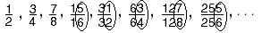

Katie, a 7th grader, finds a pattern in the partial sums of the
infinite series 1/2 + 1/4 + 1/8 + ...
This started in October '98.
Katie found the partial sums to be: 1/2, 3/4, 7/8, 15/16, 31/32, 63/64, 127/128,
... We talked about what happens with these numbers. They get bigger, but never
quite get to 1. Then she looked at the ones digits in the top and bottom of
these fractions.  Katie said the
pattern 1/2, 3/4, 7/8, and 5/6 keeps repeating. I asked her why this happens...
After a couple of days to think about this Katie said "All powers of 2
always end in 2, 4, 8, 6 in that order, and the top number is always 1 less than
the bottom number". WELL DONE KATIE!! Now this is something Don had never
seen before and that's what makes his teaching so exciting!
To other discoveries
To order
Don's materials
Mathman home